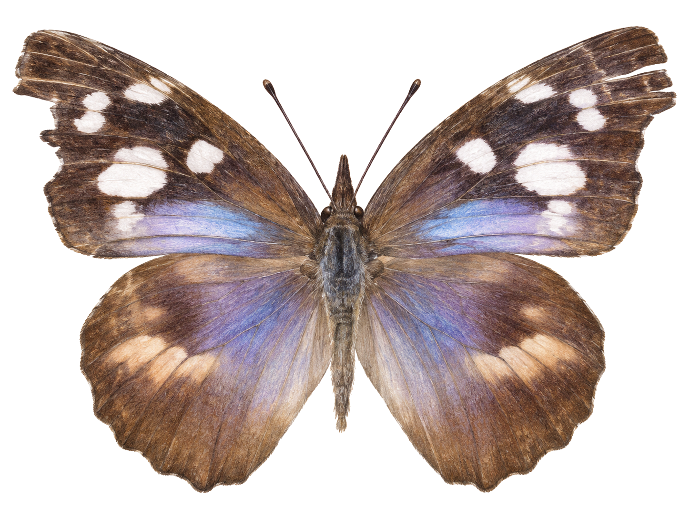

テングチョウ類 · 146 / 165
ムラサキテングチョウ
Libythea geoffroy

特徴・見分け方
前へ突き出す下唇ひげを持ち、暗色の翅に紫青色の部分と白い斑紋がある。
雌雄の違い
海外の解説では、雄は白斑が小さく淡く、紫青色部分が広がるとされる。沖縄個体だけに限定した測定ではない。
大きさ
開張約50mm（オーストラリアの研究者による種の解説）。沖縄個体だけの測定範囲ではない。
沖縄の島別記録
西表島、波照間島、与那国島に記録。波照間島には1993年の雌の標本資料がある。
生息環境
一般的には森林内や林縁。沖縄での詳しい環境選択は未確認。
生態・識別上の補足
県内では飛来記録として紹介する。海外資料には学名の異綴りもあるため、綴りは地域資料に合わせた。
幼虫・食草
今回確認した県内資料には食草の具体的な記載がない。県内での幼虫情報は未確認。
参照元・参考資料
- 沖縄蝶類生態図鑑：ムラサキテングチョウ
資料内の参照日: 2026-11-10 - パラオ昆虫図鑑：テングチョウ類の一般形態
資料内の参照日: 2026-11-10 - Australian Lepidoptera：Libythea geoffroy
資料内の参照日: 2026-11-10
掲載内容は提供データ（2026年11月10日更新）に基づきます。記録島は現在の定着や観察の容易さを保証しません。イラストは参考表現で、同定には実物の形態と参照資料を併せて確認してください。